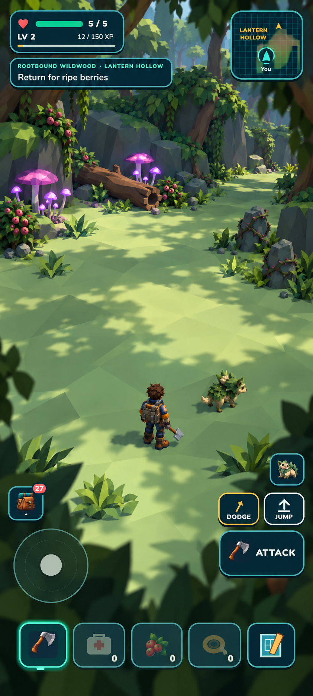
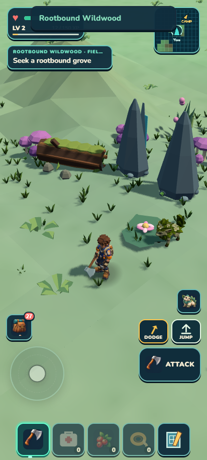
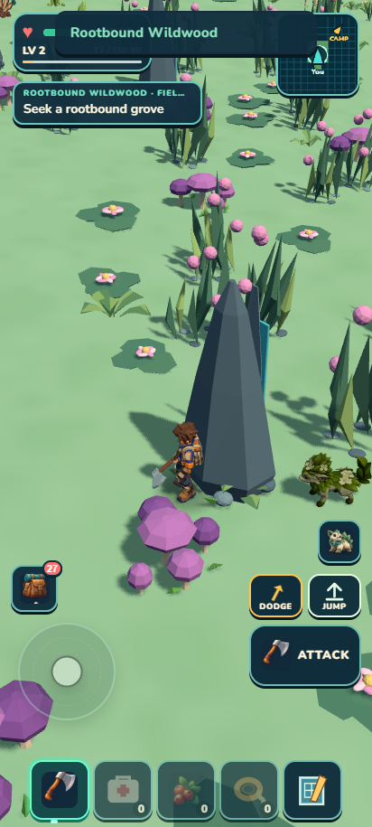
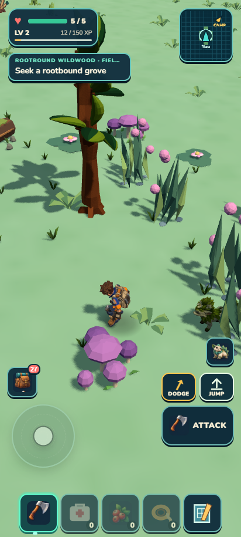
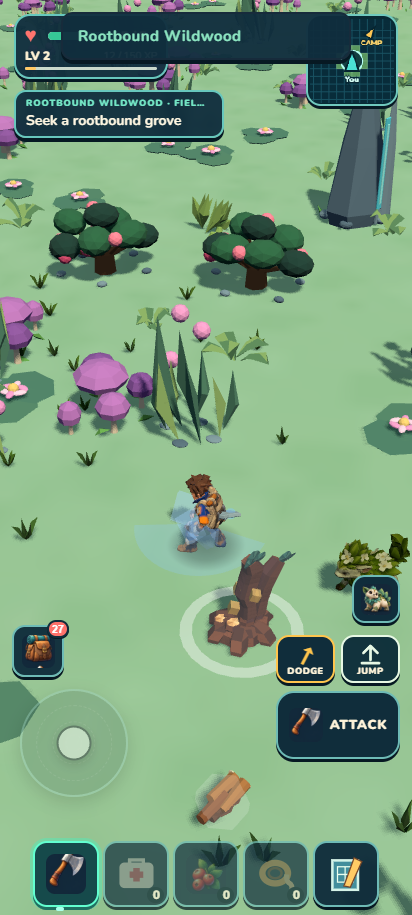
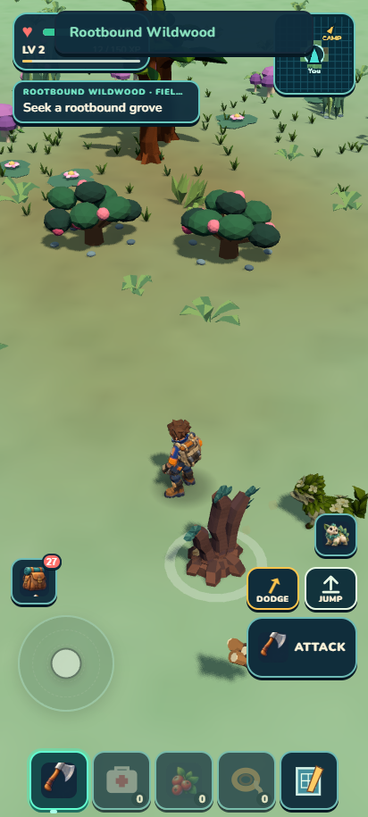
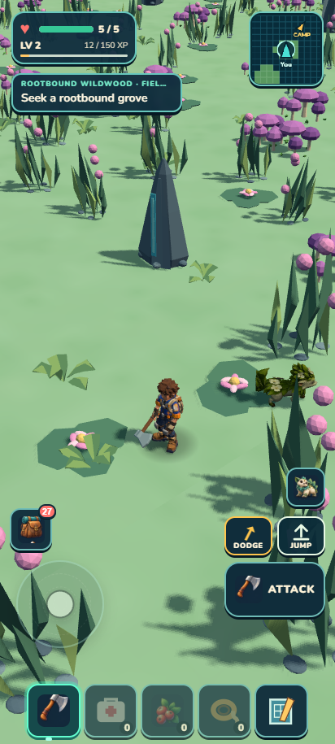
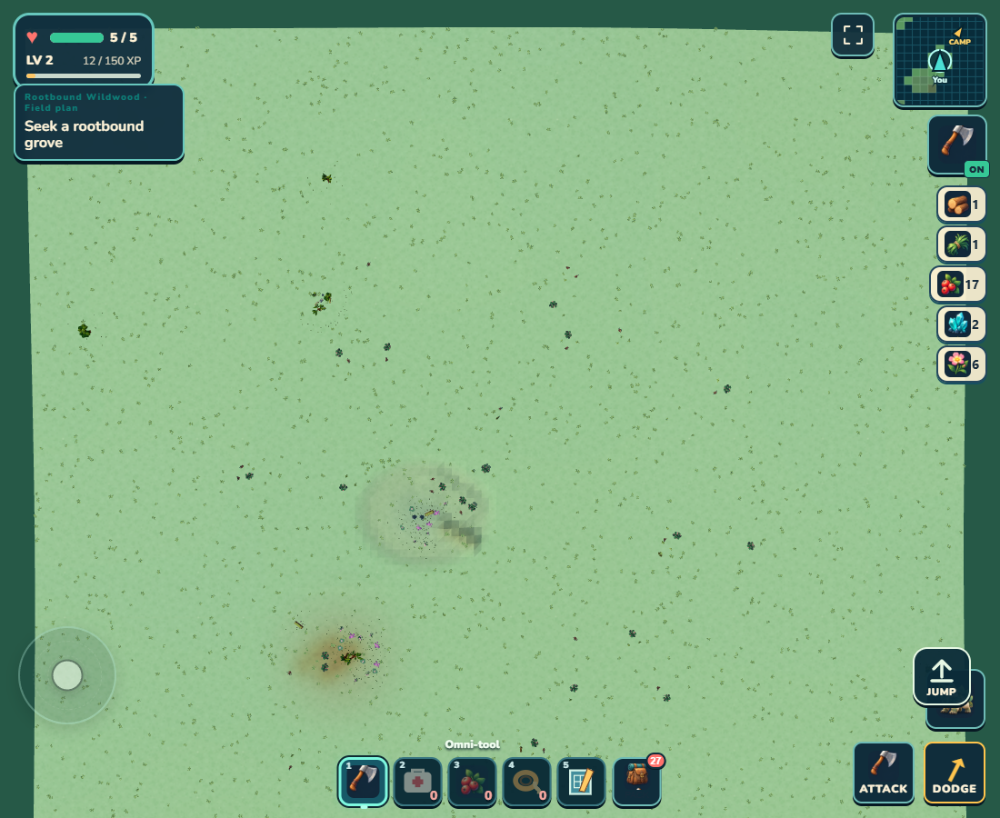
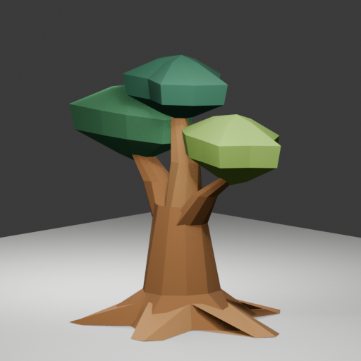

Wildkin Frontier · September 14, 2026 · Local checkpointRootbound
morning review.
Rootbound now has a bounded ten-prop framing trial and protected local terrain changes. The ordinary circuit has useful gathering, but the habitat remains far below the selected visual target. The species reference and new tree are honest development checkpoints, not shipped creatures or assets.
Habitat HOLD · 3.6/10
4m 40s circuitGuided ordinary controls, useful gathering and return. Isolated test save; one disclosed start placement.
1416 testsnpm test, verify and ZIP completed at the final source checkpoint.
20.60 MB ZIPLocal package checks. Physical-phone performance remains untested.
The selected direction and actual result
A separate target agent used your four concepts and the actual portrait frames. An independent director selected the sheltered hollow composition. Generated art is direction; the adjacent screenshot is the implemented result.

Selected direction · generated
Current game · matching destination cameraGiant roots, vine curtains, glowing materials and a cinematic horizon were deferred. Selection review · Five-change brief
Actual before and after

Original · before this run
Current · restarted bounded pass
Original · before this run
Current · restarted bounded pass
Original · before this runCurrent · restarted bounded passBounded-area overhead and earlier held attempt
The overhead shows only the loaded neighborhood, from a diagnostic camera 225m above the ground with fog disabled. It is not a full-continent map.

Earlier 3.6/10 held attempt was preserved when you explicitly restarted Batch A. The restart did not add another habitat or increase the batch count.
Trailgloam: a creature that notices forage
Construction reference conditional PASS · model/runtime HOLDA separate gameplay lane selected this beetle from three concepts. Its proposed Spore Sense points briefly toward one nearby existing resource. The two beauty references were held; the later multi-view construction sheet clarifies the body plan across complementary top and side views; front/rear leg occlusion still requires mesh proof. No encounter, ability, model, rig or animation was admitted.

The local generator expects one object in one image and cannot use the six-panel sheet as aligned views. This lane stopped at a reviewed design/reference checkpoint. Species card · Anatomy review
A missing asset, built and judged separately
HOLD 6.0/10; not shippedOne missing buttress tree was generated as a target, built in three separate Blender candidates and independently judged. The final candidate is improved but still too thin and generic; no model or collider was integrated.
 Generated construction target
Generated construction target
Actual final model render · HOLD 6.0/10; not shippedIndependent asset review
The fresh modeling-workflow test
Trial A improved the first attempt markedly, then ended at 7.4/10 HOLD. Trial B exposed serious construction failures and ended at 1.0/10 with no export. Neither tree is admitted. The planner and review stages now have explicit section, surface, tool-feasibility and evidence contracts.
 Trial A · actual final model · HOLD7.4
Trial A · actual final model · HOLD7.4 Trial B · actual failed massing · HOLD1.0
Trial B · actual failed massing · HOLD1.0Inspect the full tree comparison and workflow findings
Three things to try
- For a visual inspection, open Scout, Continue, and use flight to find the Rootbound Wildwood clearing shown in the arrival image (near x -475, z 590). Descend and press G to walk. Look for a broad open floor with the canopy/log edge; failure looks like disconnected props without a readable opening. Scout progress is temporary.
- At the Gallery shown in the second comparison (near x -480, z 720), walk toward the paired gray stones and fallen log in the Hollow (near x -449, z 675). The approach should remain traversable without repeated jumping or an invisible wall. The illustrated fixed views supplement these locations; the test route was guided, not an unaided navigation proof.
- In ordinary play, gather ripe berries beside the Hollow, return to a clear resting point and reload. Inventory and depleted berries should remain consistent, with no duplicate yield. Exact saved-foot position remains a documented reload limitation; Scout cannot test persistent gathering.
Open temporary Scout inspection · Open ordinary play. Scout progress is temporary; use ordinary play for persistence checks.
Known limits
- Final habitat visual review is HOLD 3.6/10. The third crescent method failed support/traversal feasibility; the safer second pass is retained. Root Galleries, Lantern Grove, Thornstone Verge and Heartroot Crown are not claimed as finished habitat experiences.
- The generated target is direction only. Three fixed portrait poses are diagnostic placements in an isolated copied save; the ordinary circuit used one start placement then keyboard movement guided by coordinates.
- Complete active-run save equality is not claimed: see exact differing fields below and portable proof. Inventory and ecology are reported separately.
- Headless Edge at a phone viewport is not a physical phone. Renderer interval samples are bounded diagnostics with the Blender study workbench active concurrently; they are not an isolated performance baseline, measured improvement or sustained device benchmark.
- Trailgloam has no mesh, rig, motion, encounter or ability implementation. The tree has no runtime admission. Neither is present in the game ZIP.
- The original three batches and explicit two-approach tree study are complete. Chris then authorized continuous repeated habitat rotations with Wildkin in parallel. No push, external posting, paid generation or global skill installation occurred.
Next recommendation: Continue Heartwood Basin planning, fresh baseline, 2–4 portrait targets and independent selection before a bounded structural pass; advance Trailgloam references and guarded generation in parallel. Repeat all ten habitats under the active owner goal.